VS Code 中的 Jupyter Notebook
Jupyter（原名 IPython Notebook）是一个开源项目，可让你在一个名为笔记本的画布上轻松组合 Markdown 文本和可执行的 Python 源代码。Visual Studio Code 支持原生使用 Jupyter Notebook（通过 Jupyter 扩展）以及通过 Python 代码文件。本主题介绍 Jupyter Notebook 的原生支持，并演示如何：
- 创建、打开和保存 Jupyter Notebook
- 使用 Jupyter 代码单元格
- 使用变量资源管理器和数据查看器查看、检查和筛选变量
- 连接到远程 Jupyter 服务器
- 调试 Jupyter Notebook
设置环境
要在 Jupyter Notebook 中使用 Python，你必须在 VS Code 中激活 Anaconda 环境，或者激活已安装 Jupyter 包的其他 Python 环境。要选择环境，请使用命令面板 (kb(workbench.action.showCommands)) 中的 Python: Select Interpreter 命令。
一旦激活了适当的环境，你就可以创建和打开 Jupyter Notebook，连接到远程 Jupyter 服务器以运行代码单元格，以及将 Jupyter Notebook 导出为 Python 文件。
环境变量
环境变量从 .env 文件中加载。请参阅 Python 环境文档的相关章节。
工作区信任
开始使用 Jupyter Notebook 时，你需要确保在一个受信任的工作区中工作。有害代码可以嵌入到笔记本中，而工作区信任功能允许你指定哪些文件夹及其内容应该允许或限制自动代码执行。
如果你在 VS Code 处于不受信任的工作区且运行受限模式时尝试打开笔记本，你将无法执行单元格，并且富输出将被隐藏。
创建或打开 Jupyter Notebook
你可以通过运行命令面板 (kb(workbench.action.showCommands)) 中的 Create: New Jupyter Notebook 命令，或在工作区中创建一个新的 .ipynb 文件来创建 Jupyter Notebook。
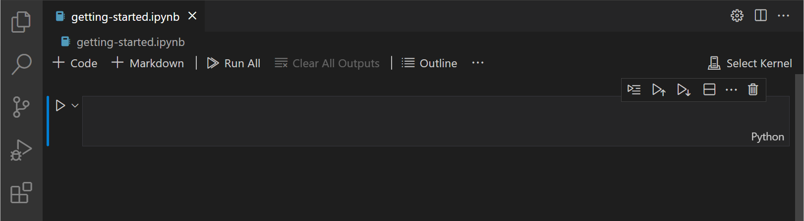
接下来，使用右上角的内核选择器选择一个内核。
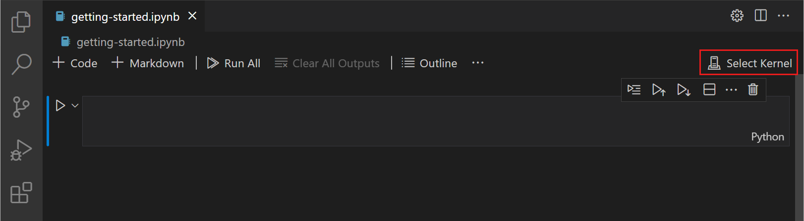
选择内核后，每个代码单元格右下角的语言选择器将自动更新为内核支持的语言。
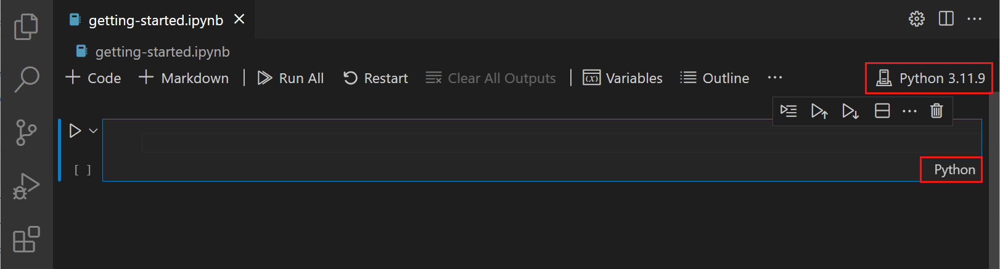
如果你有现有的 Jupyter Notebook，可以通过右键单击该文件并使用 VS Code 打开，或通过 VS Code 文件资源管理器来打开它。
运行单元格
运行单个代码单元格
添加代码后，你可以使用代码单元格左侧的运行图标来运行单元格，输出将显示在代码单元格下方。
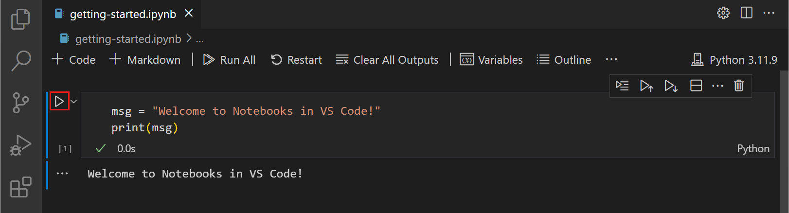
要运行选定的代码单元格，你还可以在命令模式和编辑模式下使用键盘快捷键。kbstyle(Ctrl+Enter) 运行当前选定的单元格。kbstyle(Shift+Enter) 运行当前选定的单元格并在其正下方插入一个新单元格（焦点移到新单元格）。kbstyle(Alt+Enter) 运行当前选定的单元格并在其正下方插入一个新单元格（焦点保留在当前单元格上）。
运行多个代码单元格
可以通过多种方式运行多个代码单元格。你可以使用笔记本编辑器主工具栏中的双箭头来运行笔记本内的所有单元格，或者通过在当前代码单元格上方或下方选择全部运行、运行上方所有 或运行下方所有。
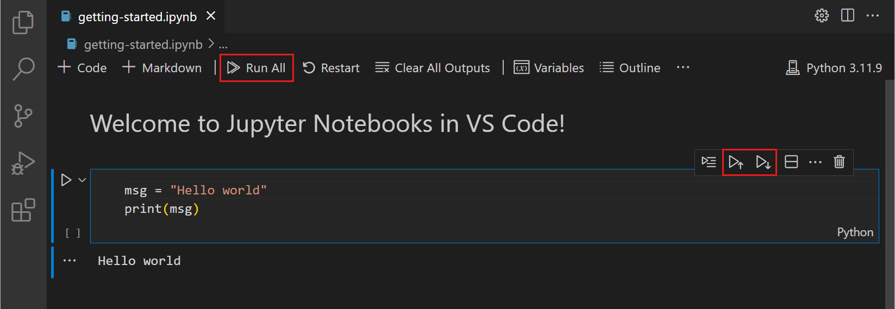
按节运行单元格
为了更轻松地运行笔记本中相关的单元格，你可以使用按节运行单元格操作，运行按 Markdown 节标题分组的单元格。此操作可在笔记本大纲视图和粘性滚动元素中使用。
在粘性滚动元素中，右键单击你选择的标题，然后通过上下文菜单中的操作运行该节。在大纲视图中，选择悬停或选中时出现的工具栏图标，然后通过显示的操作运行单个单元格或一组单元格。
保存 Jupyter Notebook
你可以使用键盘快捷键 kbstyle(Ctrl+S) 或 文件 > 保存 来保存 Jupyter Notebook。
导出 Jupyter Notebook
你可以将 Jupyter Notebook 导出为 Python 文件（.py）、PDF 或 HTML 文件。要导出，请选择主工具栏上的 ... > 导出。然后你会看到一个文件格式选项的下拉菜单。
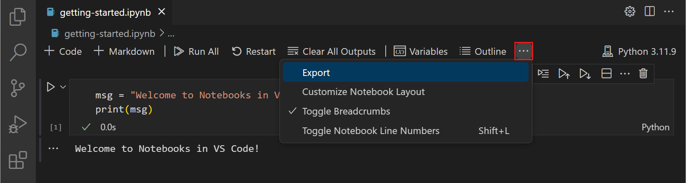
注意： 要导出 PDF，你必须安装 TeX。如果没有安装，当你选择 PDF 选项时，会收到需要安装的通知。此外，请注意如果你的笔记本中只有 SVG 输出，它们将不会在 PDF 中显示。要在 PDF 中包含 SVG 图形，请确保你的输出包含非 SVG 图像格式，或者你可以先导出为 HTML，然后使用浏览器保存为 PDF。
在笔记本编辑器中使用代码单元格
笔记本编辑器使你可以轻松地在 Jupyter Notebook 中创建、编辑和运行代码单元格。
创建代码单元格
默认情况下，空白笔记本会有一个空的代码单元格供你开始使用，而现有笔记本会在底部放置一个。将你的代码添加到空的代码单元格中以开始使用。
msg = "Hello world"
print(msg)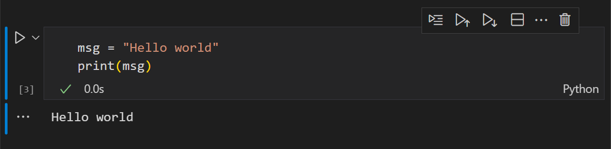
代码单元格模式
在使用代码单元格时，单元格可以处于三种状态：未选定、命令模式和编辑模式。代码单元格左侧的竖线和编辑器边框显示单元格的当前状态。当没有可见的竖线时，单元格处于未选定状态。当单元格被选定时，它可以处于命令模式或编辑模式。
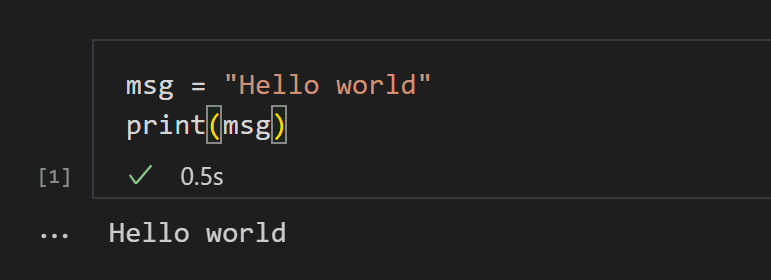
在命令模式下，单元格左侧会显示一条实心竖线。该单元格可以被操作并接受键盘命令。
在编辑模式下，单元格编辑器周围会显示一条实心竖线和边框。单元格的内容（代码或 Markdown）可以被修改。
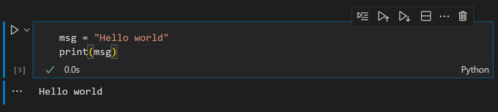
要切换模式，你可以使用键盘或鼠标。在键盘上，按 kbstyle(Enter) 键切换到编辑模式，按 kbstyle(Esc) 键切换到命令模式。使用鼠标，点击单元格左侧的竖线或代码单元格中代码/Markdown 区域之外的位置。
添加额外的代码单元格
你可以使用主工具栏、单元格的添加单元格工具栏（悬停时可见）以及键盘命令来添加代码单元格。
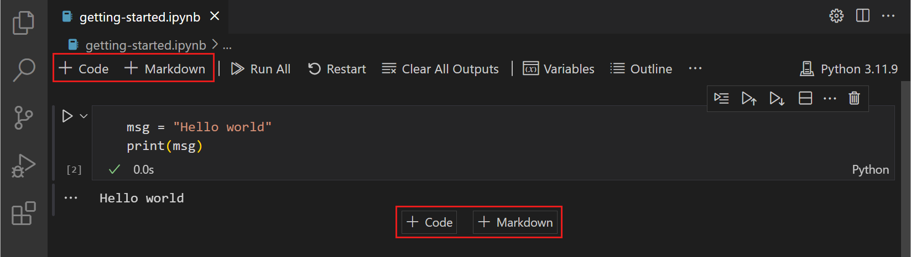
要在当前选定单元格下方添加新单元格，请使用主工具栏或单元格悬停工具栏中的加号图标。
当代码单元格处于命令模式时，使用 kbstyle(A) 键在选定单元格上方添加一个单元格，使用 kbstyle(B) 键在选定单元格下方添加一个单元格。
选择代码单元格
你可以使用鼠标或键盘上的上/下箭头键更改选定的代码单元格。当代码单元格处于命令模式时，你还可以使用 kbstyle(J) 键（向下）和 kbstyle(K) 键（向上）。
选择多个代码单元格
要选择多个单元格，请先选定一个单元格。填充背景表示被选定的单元格。要选择连续的单元格，请按住 kbstyle(Shift) 键并点击你要选择的最后一个单元格。要选择任意一组单元格，请按住 kbstyle(Ctrl) 键并点击你要添加到选择中的单元格。
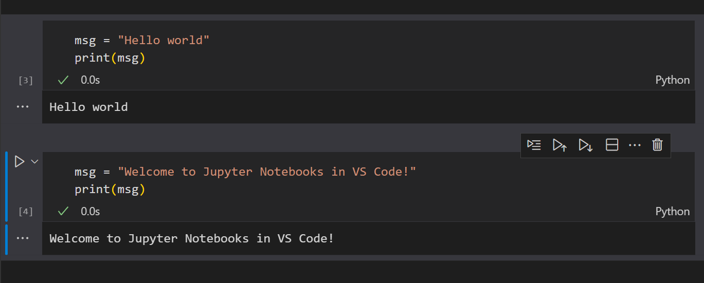
移动代码单元格
你可以通过拖放来在笔记本内上下移动单元格。对于代码单元格，可拖放区域位于单元格编辑器的左侧，如下所示。对于已渲染的 Markdown 单元格，你可以点击任意位置来拖放单元格。
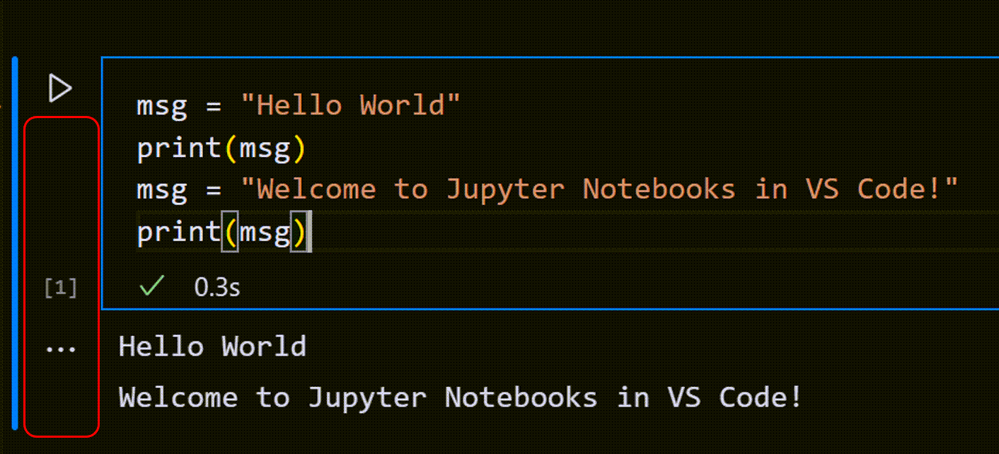
要移动多个单元格，你可以使用选择中任何单元格的相同拖放区域。
键盘快捷键 kbstyle(Alt+Arrow) 也可以移动一个或多个选定的单元格。
删除代码单元格
要删除代码，你可以使用代码单元格工具栏中的删除图标。当选定的代码单元格处于命令模式时，你可以使用键盘快捷键 kbstyle(dd)。
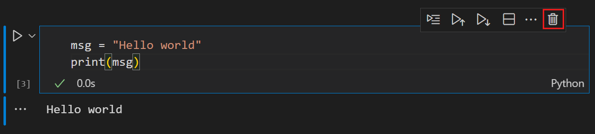
撤销上一次更改
你可以使用 kbstyle(z) 键撤销上一次更改，例如，如果你进行了意外的编辑，可以撤销到之前正确的状态；或者如果你不小心删除了一个单元格，可以将其恢复。
在代码和 Markdown 之间切换
笔记本编辑器允许你轻松地在 Markdown 和代码之间切换代码单元格。选择单元格右下角的语言选择器可以让你在 Markdown 和（如果适用）选定内核支持的其他语言之间切换。
你也可以使用键盘更改单元格类型。当单元格被选定并处于命令模式时，kbstyle(M) 键将单元格类型切换为 Markdown，kbstyle(Y) 键将单元格类型切换为代码。
一旦设置为 Markdown，你就可以在代码单元格中输入 Markdown 格式的内容。
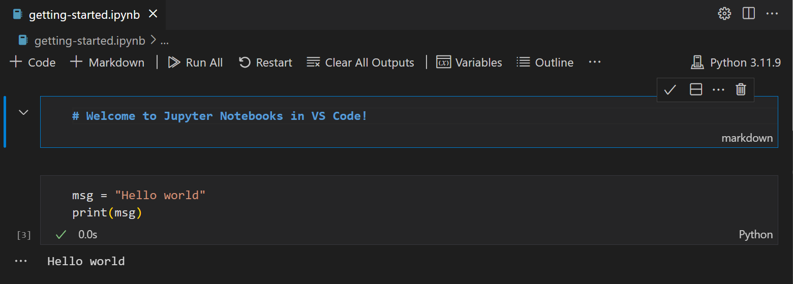
要渲染 Markdown 单元格，你可以选择单元格工具栏中的对勾标记，或使用键盘快捷键 kbstyle(Ctrl+Enter) 和 kbstyle(Shift+Enter)。
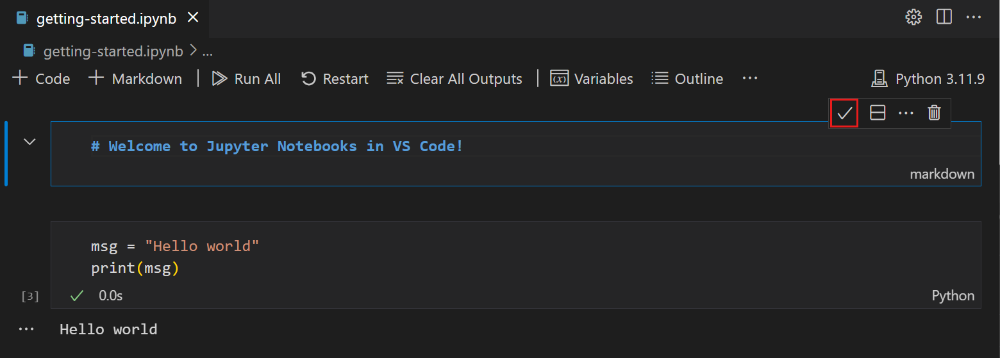
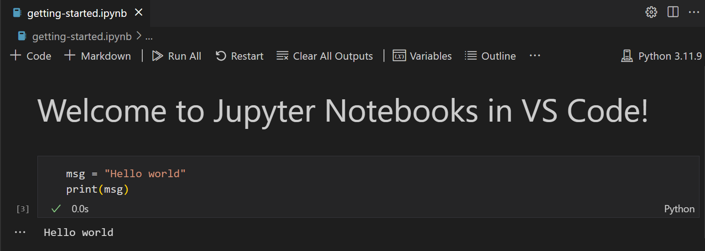
清除输出或重启/中断内核
如果你想清除所有代码单元格的输出或重启/中断内核，你可以使用笔记本编辑器主工具栏来完成。
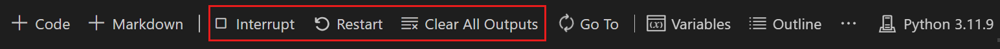
启用/禁用行号
当你在命令模式下时，可以使用 kbstyle(L) 键在单个代码单元格中启用或禁用行号。
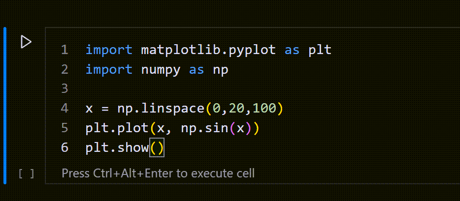
要切换整个笔记本的行号，请在任何单元格处于命令模式时使用 kbstyle(Shift+L)。
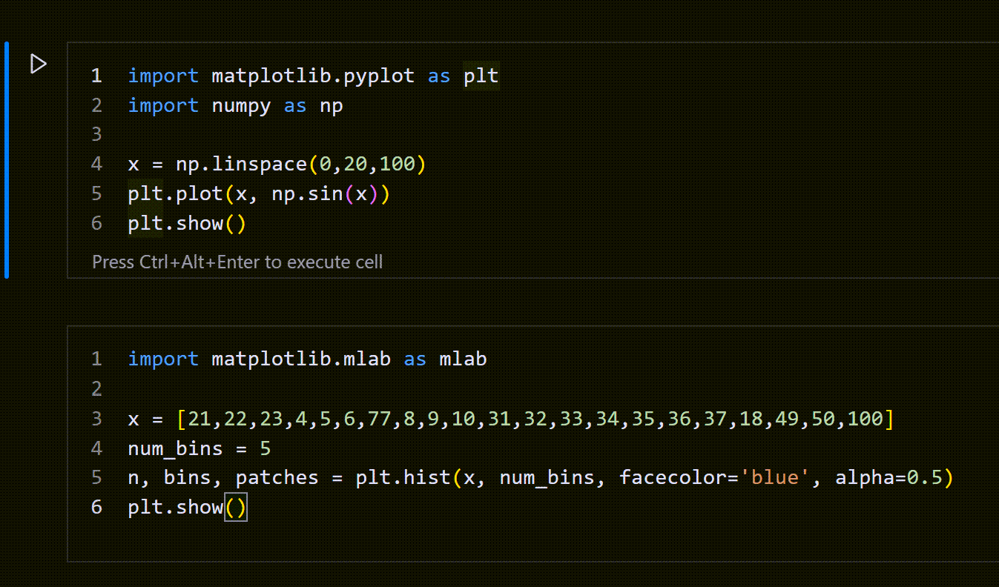
目录
要在笔记本中导航，请打开活动栏中的文件资源管理器，然后在侧栏中打开大纲选项卡。
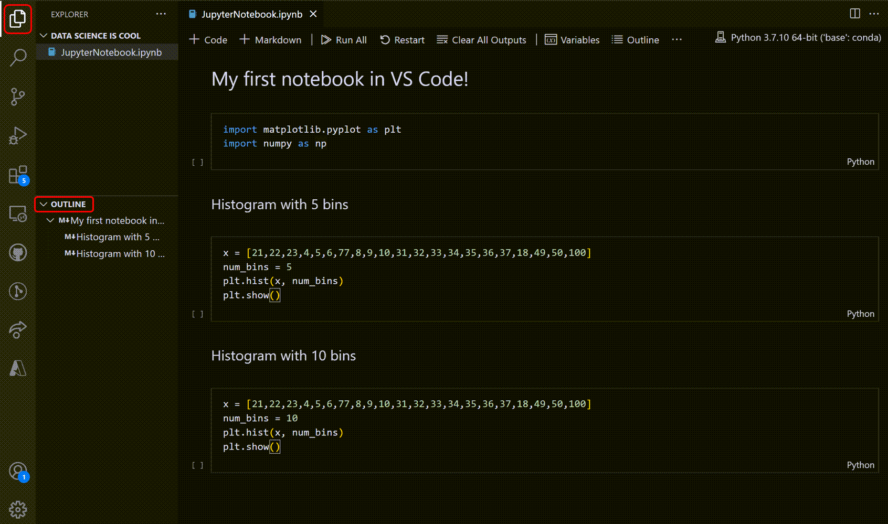
你可以使用大纲视图中的筛选控件来包含 Markdown 标题、代码单元格和代码单元格符号。筛选器对应以下设置：
notebook.outline.showMarkdownHeadersOnlynotebook.outline.showCodeCellsnotebook.outline.showCodeCellSymbols
注意： 默认情况下，大纲将仅显示 Markdown。要显示代码单元格，请启用以下设置：Notebook > Outline: Show Code Cells。
Jupyter Notebook 编辑器中的 IntelliSense 支持
Python Jupyter Notebook 编辑器窗口具有完整的 IntelliSense 功能——代码补全、成员列表、方法快速信息和参数提示。在笔记本编辑器窗口中编写代码可以和在代码编辑器中一样高效。
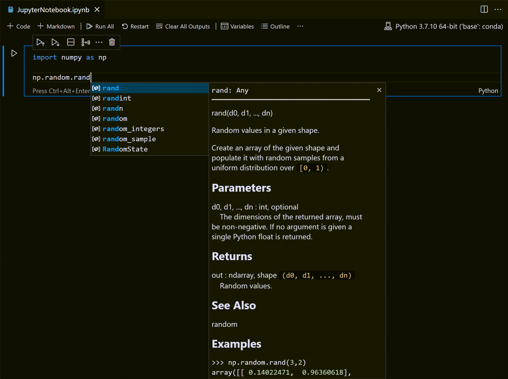
变量资源管理器和数据查看器
在 Python Notebook 中，可以查看、检查、排序和筛选当前 Jupyter 会话中的变量。在运行代码和单元格后，选择主工具栏中的变量图标，你将看到当前变量的列表，这些变量会在代码中使用变量时自动更新。变量窗格将在笔记本底部打开。
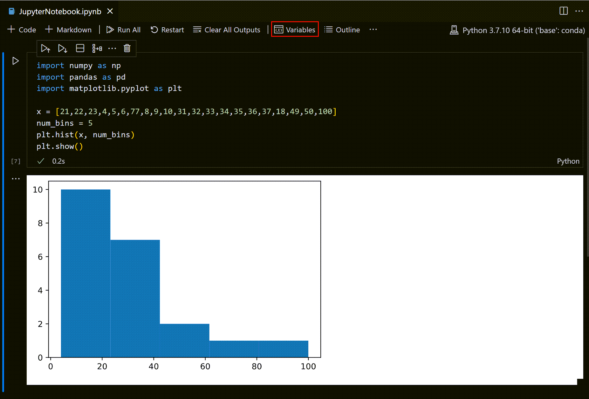
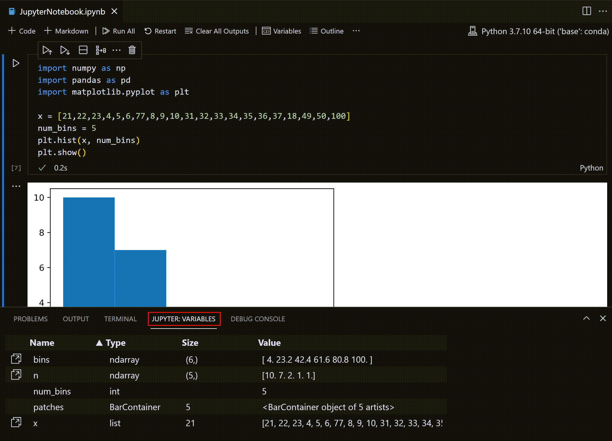
数据查看器
要获取有关变量的更多信息，你还可以双击某一行或使用变量旁边的在数据查看器中显示变量按钮，在数据查看器中查看变量的更详细信息。
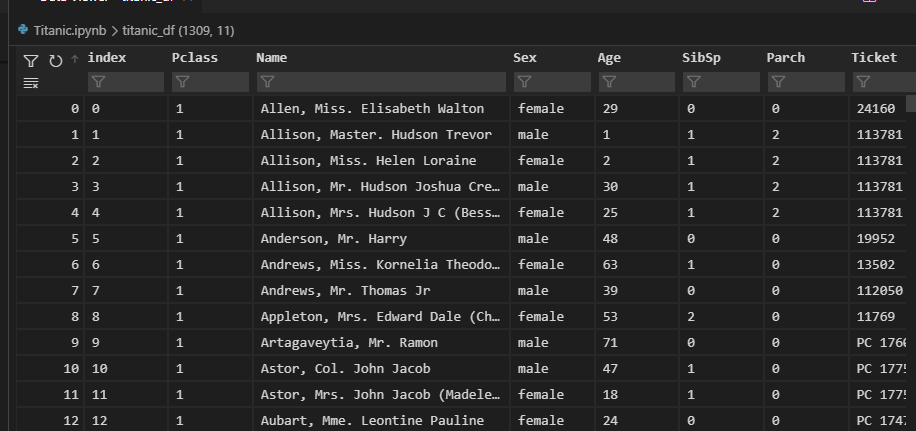
或者，你也可以使用其他扩展（如 Data Wrangler）提供的数据查看体验。Data Wrangler 扩展提供了一个丰富的用户界面来显示数据的洞察信息，并帮助你执行数据分析、质量检查、转换等操作。在我们的文档中了解有关 Data Wrangler 扩展的更多信息。
筛选行
在数据查看器中筛选行可以通过在每个列顶部的文本框中输入来完成。输入你想要搜索的字符串，该列中包含该字符串的任何行都将被找到：
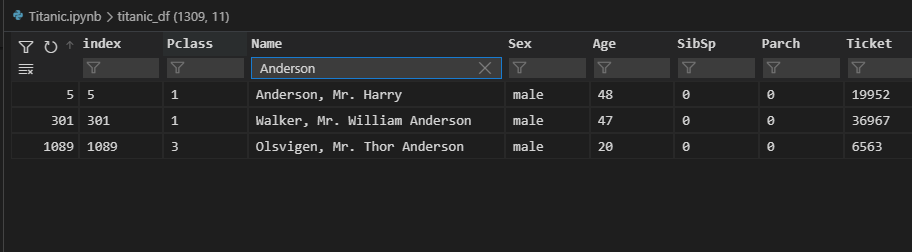
如果你想查找精确匹配，请在筛选条件前加上 '='：
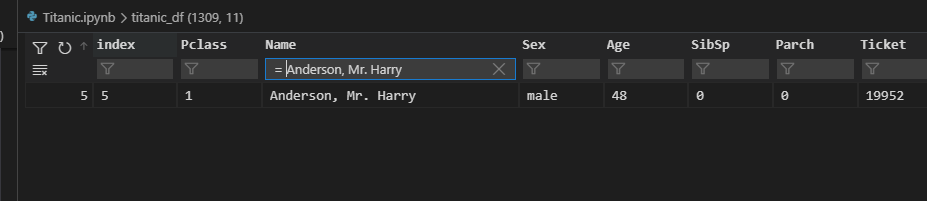
更复杂的筛选可以通过输入正则表达式来完成：
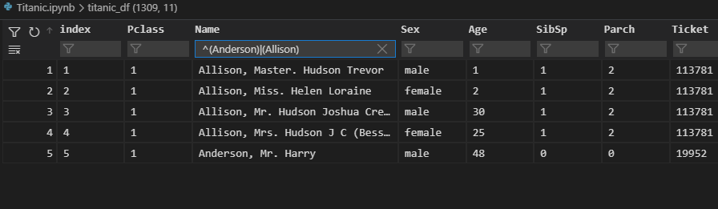
保存图表
要从笔记本中保存图表，只需将鼠标悬停在输出上方，然后选择右上角的保存图标。
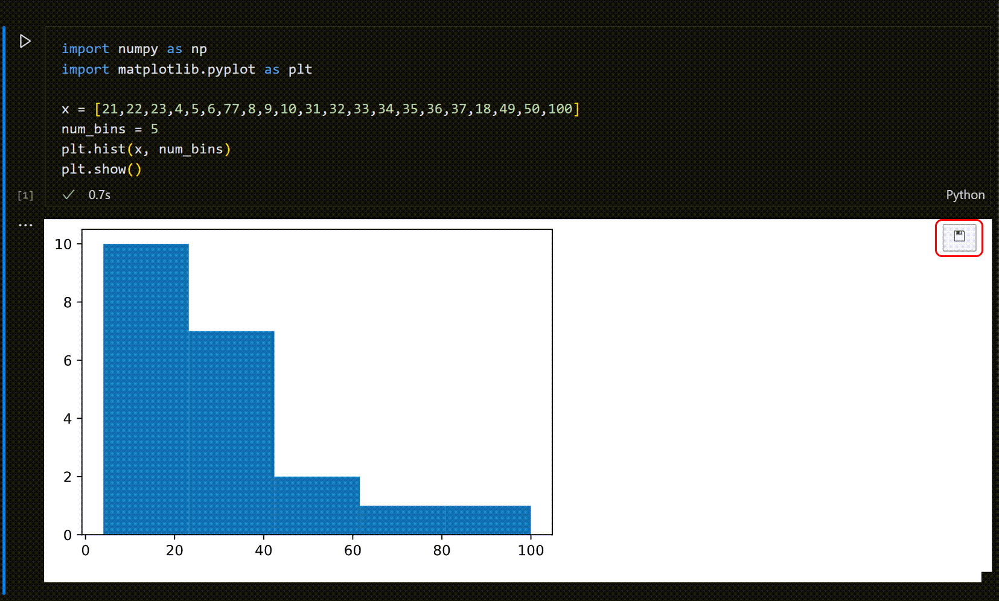
注意： 支持渲染使用 matplotlib 和 Altair 创建的图表。
自定义笔记本差异比较
在底层，Jupyter Notebook 是 JSON 文件。JSON 文件中的段被渲染为由三个组件组成的单元格：输入、输出和元数据。使用基于行的差异比较来比较笔记本中的更改是困难的且难以解析。笔记本的富差异编辑器让你可以轻松查看单元格每个组件的更改。
你甚至可以自定义在差异视图中显示哪些类型的更改。在右上角，选择工具栏中的溢出菜单项以自定义要包含哪些单元格组件。输入差异将始终显示。
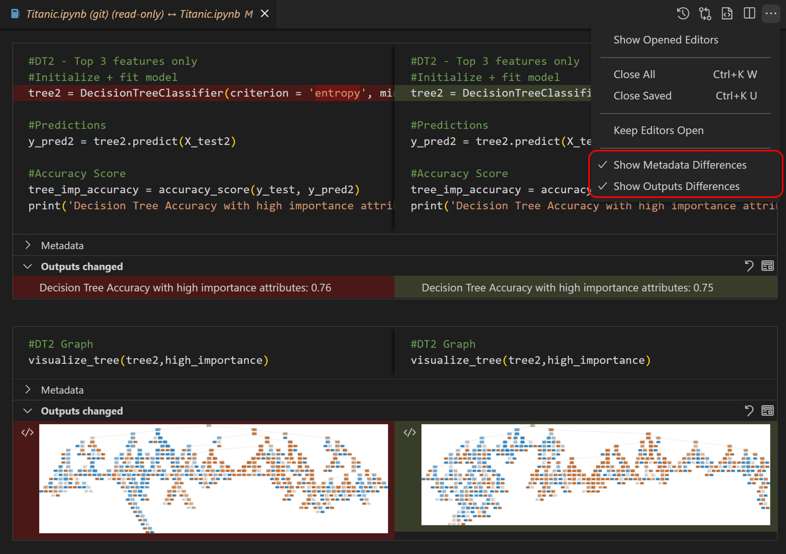
要了解有关 VS Code 中 Git 集成的更多信息，请访问 VS Code 中的源代码管理。
调试 Jupyter Notebook
有两种不同的方式来调试 Jupyter Notebook：一种称为"逐行运行"的更简单模式，以及完整的调试模式。
注意： 这两种功能都需要 ipykernel 6+。有关安装或升级 ipykernel 的详细信息，请参阅此维基页面。
逐行运行
逐行运行让你可以逐行执行一个单元格，而不会被 VS Code 的其他调试功能所干扰。要开始，请选择单元格工具栏中的逐行运行按钮：
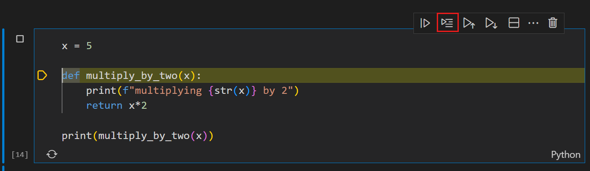
使用相同的按钮前进一条语句。你可以选择单元格的停止按钮提前停止，或选择工具栏中的继续按钮继续运行到单元格的末尾。
调试单元格
如果你想使用 VS Code 中支持的完整调试功能集，例如断点以及跳入其他单元格和模块的能力，你可以使用完整的 VS Code 调试器。
- 首先，通过点击笔记本单元格左侧边距设置你需要的任何断点。
- 然后选择运行按钮旁边菜单中的调试单元格按钮。这将在调试会话中运行该单元格，并在任何运行的代码中（即使它在不同的单元格或
.py文件中）暂停在你的断点处。 - 你可以像在 VS Code 中通常那样使用调试视图、调试控制台以及调试工具栏中的所有按钮。
请注意，在 jupyter 笔记本中调试单元格不使用 launch.json 中的任何调试配置。它可以通过设置（如 jupyter.debugJustMyCode）进行自定义。
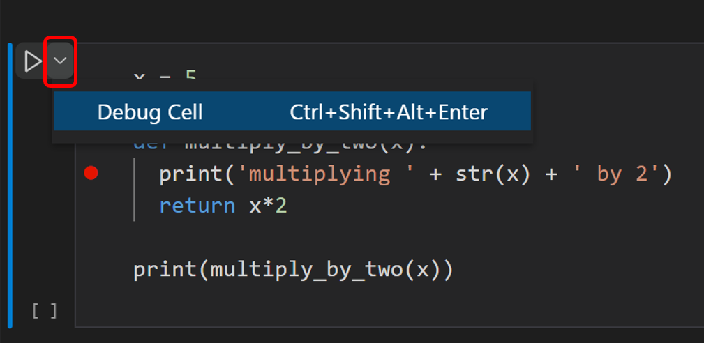
搜索笔记本
你可以使用键盘快捷键 kbstyle(Ctrl/Cmd + F) 在笔记本中搜索（或通过筛选搜索选项来搜索笔记本的部分内容）。点击筛选选项（漏斗图标）以在以下范围内搜索：
- Markdown 单元格输入（Markdown 源）
- Markdown 单元格输出（渲染的 Markdown）
- 代码单元格输入（代码单元格源）
- 代码单元格输出（单元格输出）
笔记本搜索默认仅筛选单元格输入。
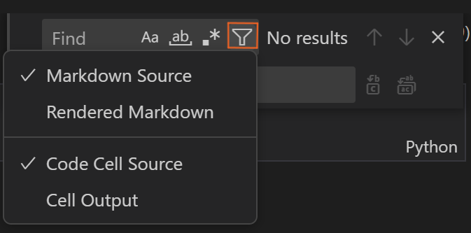
连接到远程 Jupyter 服务器
你可以通过连接到远程 Jupyter 服务器，将 Jupyter Notebook 中的密集计算转移到其他计算机上。连接后，代码单元格将在远程服务器上运行，而不是在本地计算机上。
要连接到远程 Jupyter 服务器：
- 打开笔记本右上角的内核选择器按钮（或从命令面板运行 Notebook: Select Notebook Kernel 命令）。
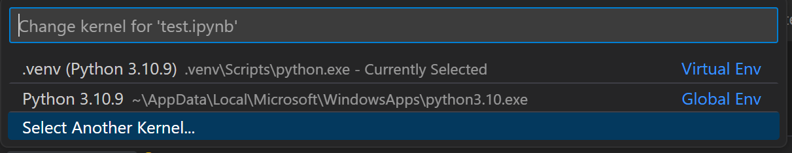
- 选择现有 Jupyter 服务器选项以连接到现有的 Jupyter 服务器。
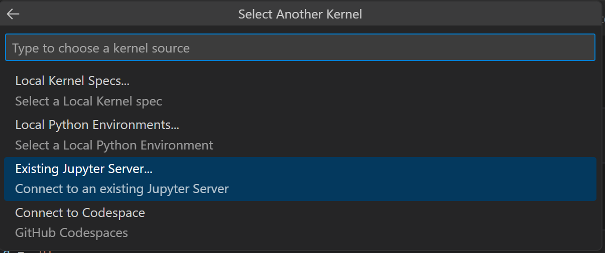
- 要首次连接到现有服务器，请选择输入运行中的 Jupyter 服务器的 URL。

- 当提示输入运行中的 Jupyter 服务器的 URL 时，提供服务器的 URI（主机名）以及通过
?token=URL 参数包含的身份验证令牌。（如果你在 VS Code 终端中启动了启用身份验证令牌的服务器，带有令牌的 URL 通常会显示在终端输出中，你可以从中复制。）或者，你可以在提供 URI 后指定用户名和密码。
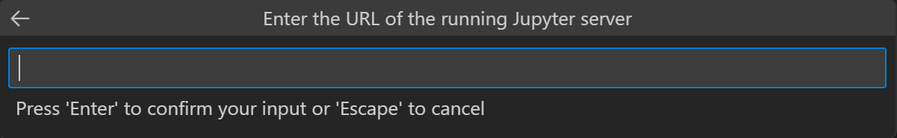
注意： 为了增加安全性，Microsoft 建议使用 SSL 和令牌支持等安全预防措施来配置你的 Jupyter 服务器。这有助于确保发送到 Jupyter 服务器的请求经过身份验证，并且与远程服务器的连接经过加密。有关保护笔记本服务器的指导，请参阅 Jupyter 文档。
数据科学配置文件模板
配置文件让你可以根据当前项目或任务快速切换扩展、设置和 UI 布局。为了帮助你开始使用 Jupyter Notebook，你可以使用数据科学配置文件模板，这是一个包含有用的扩展、设置和代码片段的精选配置文件。你可以按原样使用配置文件模板，或将其作为起点，根据自己的工作流程进一步自定义。
你通过配置文件 > 创建配置文件... 下拉菜单选择配置文件模板：

选择配置文件模板后，你可以查看设置和扩展，如果不希望将它们包含在新配置文件中，可以移除单个项目。基于模板创建新配置文件后，对设置、扩展或 UI 所做的更改将保留在你的配置文件中。